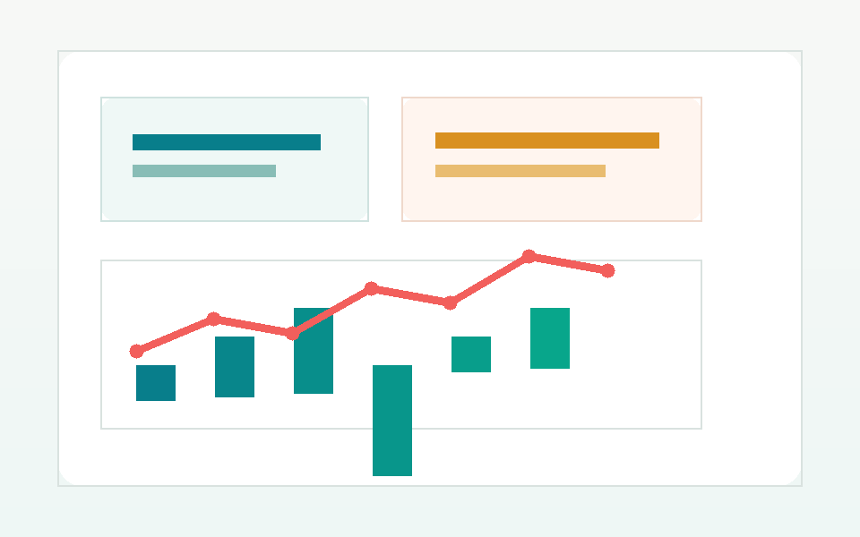
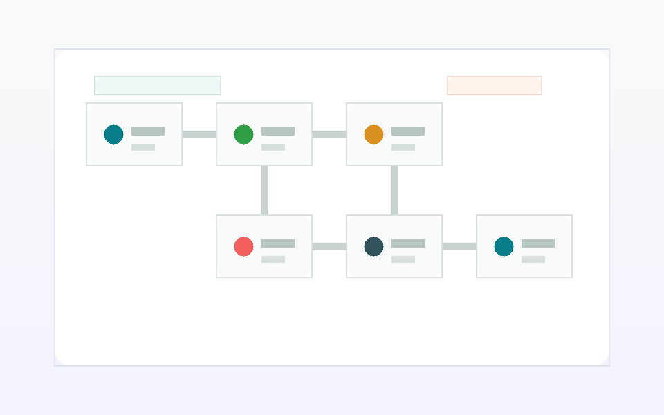
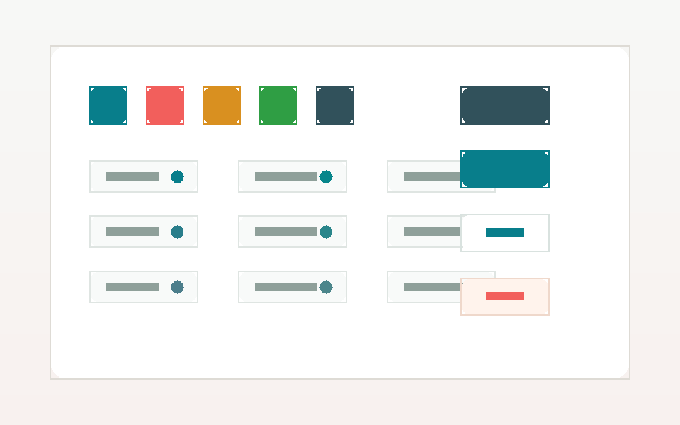

About
문제를 구조화하고, 작게 출시하고, 빠르게 배웁니다.
이 영역에는 본인의 개발 철학과 강점을 적습니다. 예를 들어 제품 지표를 읽는 방식, 팀과 협업하는 방식, 사용자의 불편을 기술적으로 해결한 경험을 짧고 구체적으로 소개할 수 있습니다.
Skills
기술은 목적에 맞게 선택합니다.
Frontend
Product
Engineering
Selected Projects
대표 프로젝트



Experience
경험과 활동
-
제품 팀 프론트엔드 개발자
핵심 사용자 흐름 개선, 실험 플랫폼, 성능 최적화 작업을 담당했습니다.
-
웹 서비스 개발 및 운영
관리자 도구, 고객 대시보드, 자동화 파이프라인을 개발했습니다.
-
오픈소스와 학습 커뮤니티
스터디 발표, 문서 기여, 팀 프로젝트 리딩 경험을 쌓았습니다.
Contact
함께 만들고 싶은 일이 있다면 연락해 주세요.
아래 정보는 자리표시자입니다. 실제 이메일, GitHub, LinkedIn 주소로 바꾸면 바로 개인 포트폴리오로 사용할 수 있습니다.